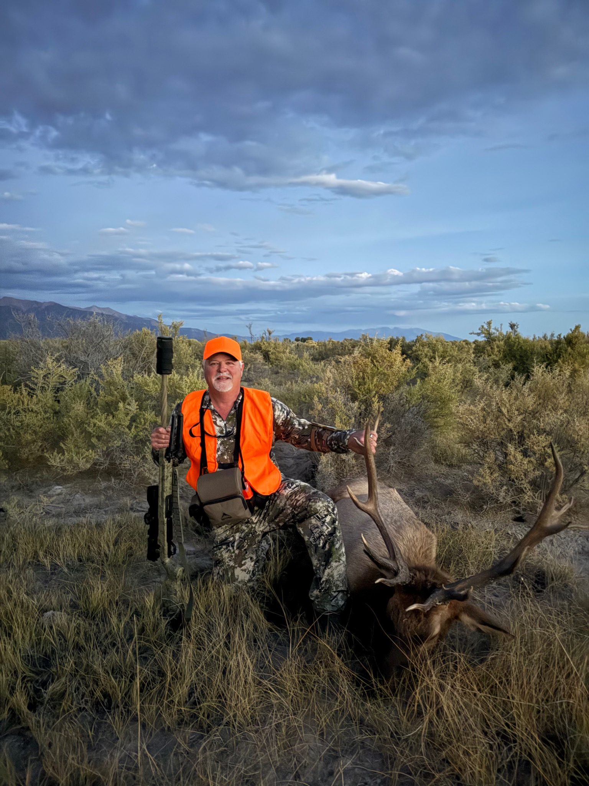
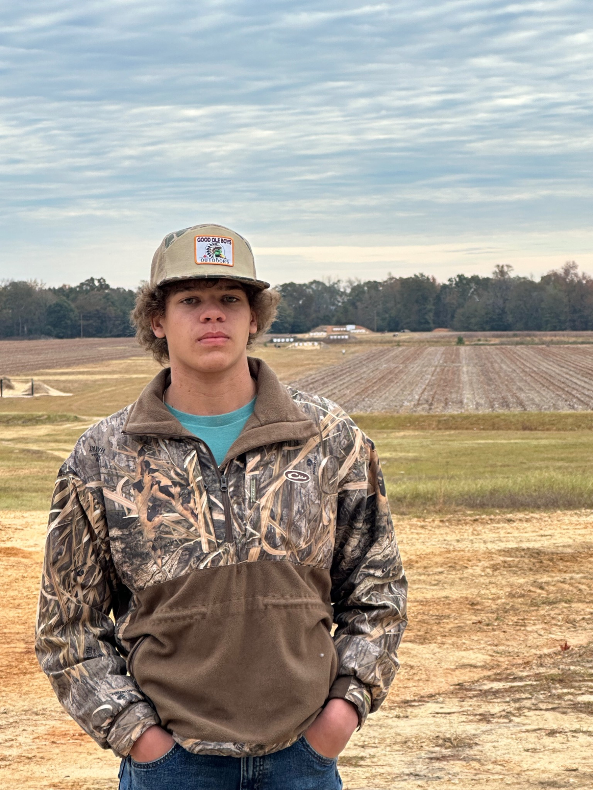

Ron Young
Owner / Lead Builder
Long-range shooter, western hunter, precision reloader and custom rifle builder. Ron has completed Level II of James Eagleman's Long Range Shooting Course.
Southern Precision Rifle Solutions was built around a passion for precision, a commitment to quality and hands-on experience behind the rifle. Our staff has attended James Eagleman's Long Range Shooting Course, and Ron has completed Level II. We regularly shoot to 1,000 yards and have made shots to 1,700 yards with our rifles.
We are precision reloaders ourselves and understand how the rifle, ammunition, setup and shooter all work together. Southern Precision Rifle Solutions is owned by Southern Auction Solutions, Inc., the FFL holder for the business. We hold the appropriate NFA licensing and handle electronic Form 4 filings for suppressor transfers in accordance with applicable law.

Long-range shooter, western hunter, precision reloader and custom rifle builder. Ron has completed Level II of James Eagleman's Long Range Shooting Course.

Rifle builder and technician with a practical eye for detail and a passion for long-range shooting and hunting.